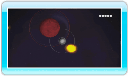

11 |
Completar fases |
 |
|
Cuando domines las técnicas básicas de Orbient al dedillo, ya podrás utilizar tus habilidades para llevar a cabo las siguientes tareas en tu afán por completar cada una de las fases. ● Absorber astros azules En primer lugar, colisiona con un astro azul y aumenta el tamaño del tuyo. Cuando tu astro se haga más grande, los astros rojos, que en un primer momento no se podían absorber, se volverán azules y, en consecuencia, podrás absorberlos. Si no sabes hacia adónde avanzar, pulsa 
● Convertir un astro gris en satélite Si te mueves con cuidado al lado de un astro gris, puedes convertirlo en satélite. Si completas una fase con satélites, conseguirás una bonificación en función del número de satélites que tengas. El número de satélites también condicionará el número de vidas que se te concedan. Antes de completar una fase, intenta crear tantos satélites como puedas.

● Convertir el astro objetivo en satélite Si tu astro alcanza el mismo tamaño que el astro objetivo, este último lanzará destellos amarillos. Si consigues convertir el astro objetivo en satélite, habrás completado la fase. Para convertir el astro objetivo en satélite, tendrás que seguir el mismo método que se emplea con el astro gris. Nota: No puedes unirte al astro objetivo y si colisionas con él, perderás una vida. ● Consultar la pantalla de resultados Los puntos de la fase se calculan tomando como referencia los factores que se ofrecen a continuación. Si completas una fase después de haber convertido una luna en satélite, aparecerá una marca lunar a la derecha de la bonificación (BONUS).
|
 y consulta el mapa de la fase.
y consulta el mapa de la fase. |
 |
 |